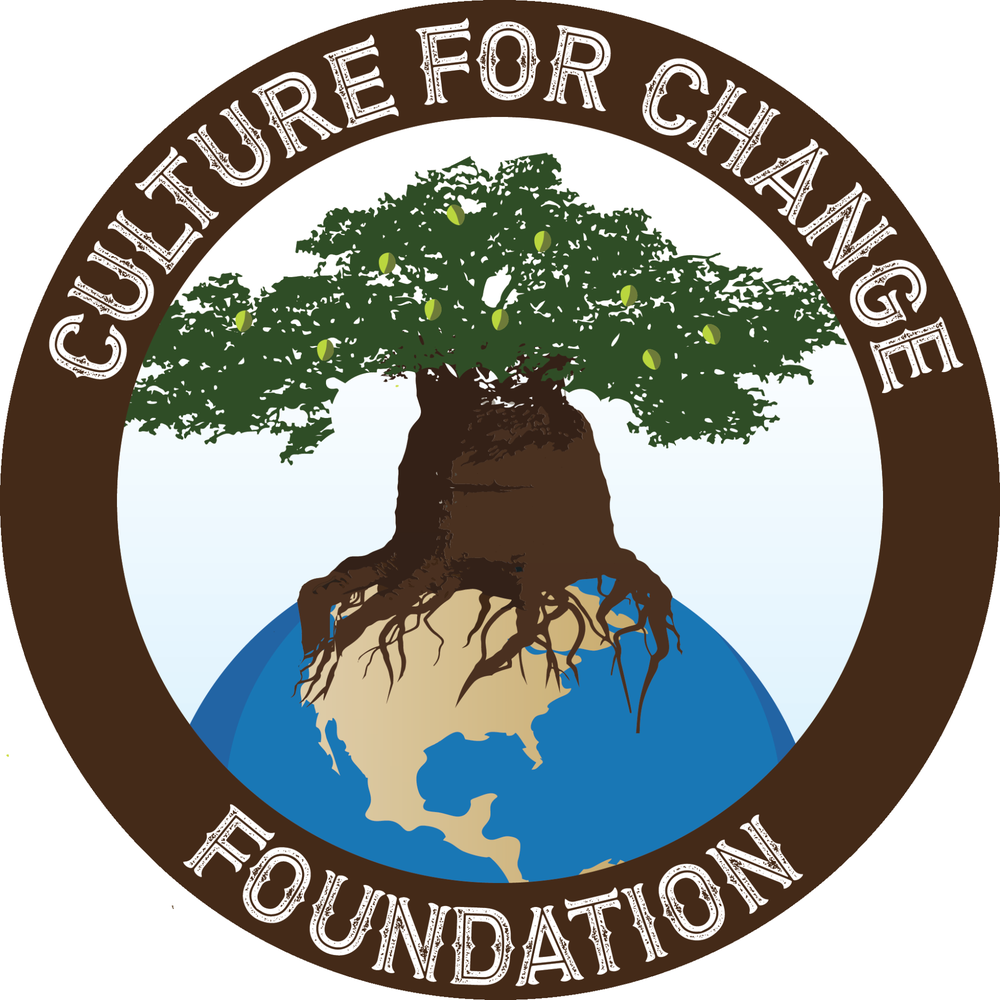
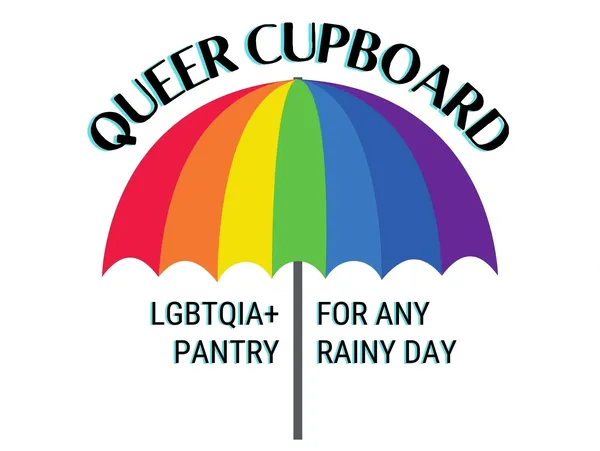
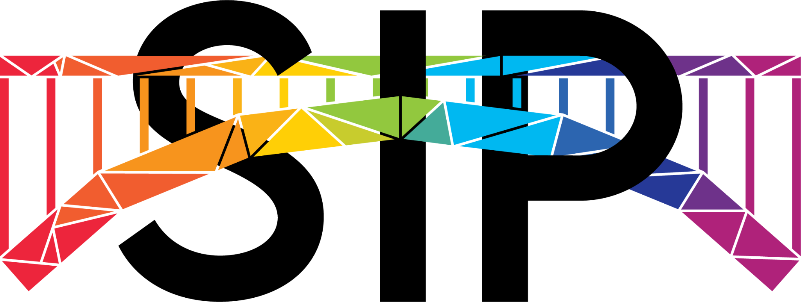
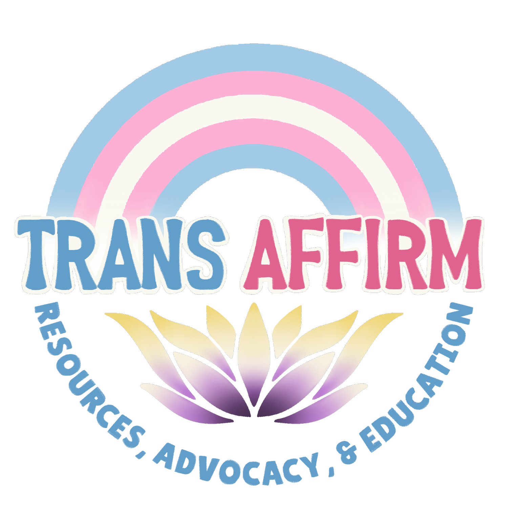
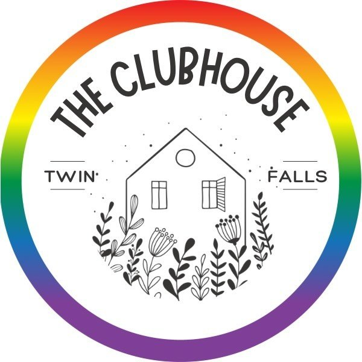

Please Check Out These Other Organizations!
Within our mission and goal, it is important to bring communities together. We can not accomplish that if we do not support other organizations!

Culture For Change
Handle With Care is a program within Culture For Change. We are so excited to be part of an amazing organization who has taken our hand, guiding us on our way to success. CFC is a non-profit organization that provides free classes to the community on different skill sets, ranging from sewing classes to essential oil DIY projects.

Queer Cupboard
Queer Cupboard is the food pantry for the LGBTQIA+ community, serving Twin Falls and the surrounding areas. QC was founded by Jenna and her wife, Tiffany. They knew that the queer community has a lot of members that experience food insecurties and want to help those experiencing a rainy day.

Southern Idaho Pride
Southern Idaho Pride (SIP) serves the LGBTQIA+ in Twin Falls County and six surrounding counties. They are put together Pride week and the festival that is in June, which is Pride month, along with other activities to bring members together and give them the support they need.

Trans AffirmTrans Affirm is an organization that was created to help Trans Idahoans. They have expanded access to life-saving resources, affirming care, education, advocacy, and community connection for the transgender and gender non-conforming people in Idaho.

The Clubhouse Instagram
A program within Southern Idaho Pride, it is a space for LGBTQIA+ teens in the Magic Valley to build community and have fun! The Clubhouse is also at an undisclosed location for the safety of our youth. For ages 13-18.
 Stand In Pride
Stand In Pride
Stand In Pride is all about helping and member of the LGBTQIA+ community who has lost the love and support of their family. They help them get connected with a "loving heart", meaning a volunteer that will be their Stand in Family.

Mama Dragons
Mama Dragons is an organization that caters specifically to parents that have children in the LGBTQIA+ community.